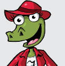

Se dicen muchas cosas sobre mí…
Algunos pueblos originarios de América creen que mis dientes tienen poderes curativos.
Supuestamente, si se cuelgan del cuello o de un brazo evitan la mordedura de serpientes, y si no la evitan, el veneno se vuelve inofensivo.